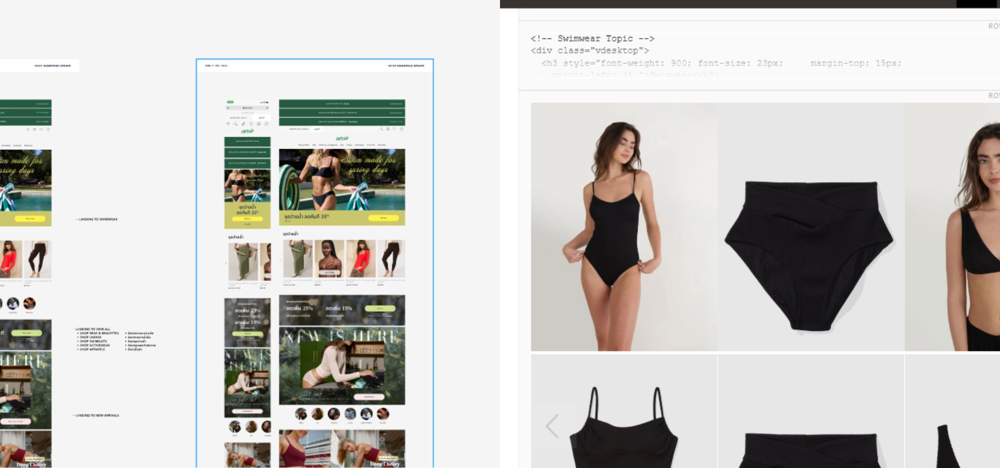
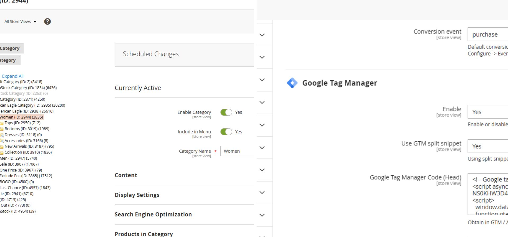

Magento CMS & Frontend Operations
I manage day-to-day operations for 5 Magento-based brand websites. My focus is on keeping content fresh, making sure campaign launches run without technical hitches, and finding better technical solutions to improve the customer experience.
CMS & Content Customization (5 Sites)

Handling daily content updates and custom HTML/CSS for brand websites.
- Managed and updated CMS content across 5 live Magento stores, ensuring brand consistency.
- Customized CMS pages using HTML/CSS to support marketing campaigns that couldn't be achieved with default templates.
- Handled complex responsive adjustments to make sure promotional banners and layouts look perfect on all mobile devices.
- Collaborated with the marketing team to turn their visual ideas into live, functional web pages.
Technical Research & Solution Building

Finding and testing third-party services to add new website features.
- Researched new website services and third-party tools to expand site capabilities, such as advanced search, loyalty apps, or custom UX features.
- Analyzed and compared different providers to find the most cost-effective and performance-friendly solutions for Magento.
- Assisted in setting up and testing new integrations to ensure they didn't conflict with existing site core logic.
Production Support & Troubleshooting

Solving site issues and working with developers.
- Served as the primary contact for troubleshooting site errors, payment glitches, and CMS-related bugs.
- Worked directly with Adobe Magento Support and outsourced developers to resolve deep technical issues beyond CMS level.
- Performed regular checks to ensure all live updates were stable and didn't impact the site's checkout flow.